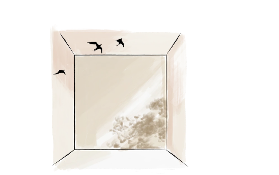
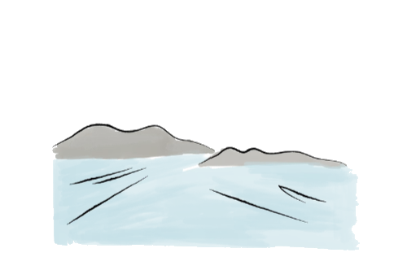

寵物善終・火化服務收費｜RESOUL
服務收費
清楚了解選擇，
再按你們的需要決定。
不同服務由相應的專業團隊負責，以下清楚分列獨立註冊獸醫專業服務、RESOUL 善終服務、悲傷支援及紀念產品。所有已知額外費用會在確認前說明。

獨立註冊獸醫上門服務
上門評估 · 參考收費
以下為參考價，待合作獸醫確認。獸醫專業服務與 RESOUL 善終服務屬不同服務，收據分項提供。
| 體重 | 日間參考價 | 夜間參考價 |
|---|---|---|
| 0 至 10kg | HK$3,980 | HK$4,380 |
| 10 至 20kg | HK$4,280 | HK$4,680 |
| 20 至 30kg | HK$4,780 | HK$5,180 |
| 30 至 40kg | HK$5,480 | HK$5,880 |
| 40 至 50kg | HK$6,280 | HK$6,680 |
| 50 至 60kg | HK$7,180 | HK$7,580 |
| 60kg 以上 | 個別報價 | 個別報價 |
＊上述為參考價，正式發布前須由合作獸醫確認。實際費用可因地區、時段、毛孩狀況及所需安排而變更。獸醫專業服務由獸醫確認並按實際付款架構提供收據。
RESOUL 善終旅程
三種旅程，一樣的用心。

三個旅程用同樣的心意，分別在於告別儀式與紀念安排的深度。收費按毛孩體重分級如下：
| 體重 | 風之旅 | 雲之旅 | 星之旅 |
|---|---|---|---|
| < 1 kg | HK$1,800 | HK$2,800 | HK$3,800 |
| 1.1–5 kg | HK$2,600 | HK$3,600 | HK$4,600 |
| 5.1–10 kg | HK$2,800 | HK$3,800 | HK$4,800 |
| 10.1–15 kg | HK$3,000 | HK$4,000 | HK$5,000 |
| 15.1–20 kg | HK$3,200 | HK$4,200 | HK$5,200 |
| 20.1–30 kg | HK$3,500 | HK$4,500 | HK$5,500 |
| 30.1–40 kg | HK$4,500 | HK$5,500 | HK$6,500 |
| 40.1–50 kg | HK$4,800 | HK$5,800 | HK$6,800 |
風之旅：簡約完成私人接送、個別火化及基本骨灰安排。雲之旅：完整私人告別儀式及指定紀念項目。星之旅：深度個人化告別及進階紀念選擇。50kg 以上請個別報價；另設「回歸自然 HK$500」及「慈善套餐 HK$800」。詳細比較請參考「善終旅程」頁。
情緒及悲傷支援
按你的步伐，選擇需要的支援。
| 服務 | 建議收費 |
|---|---|
| 離別後關懷訊息及電子指南 | 免費 |
| 15 分鐘關懷電話／初步需要了解 | 善終客戶免費一次 |
| 同路人小組或主題分享會 | HK$180 至 280／位 |
| 非臨床悲傷陪伴 30 分鐘 | HK$380 至 480 |
| 合資格輔導員個別面談 50 分鐘 | HK$680 至 900 |
| 註冊輔導／臨床心理學家 50 分鐘 | 約 HK$1,100 至 1,600（由專業人士確認） |
| 三節輔導組合 | 建議約單次總價九折 |
＊以上為建議價格架構，未確認合作人士資格、實際批發價及服務內容前不會正式發布。RESOUL 一般悲傷關懷與專業心理服務清楚區分。